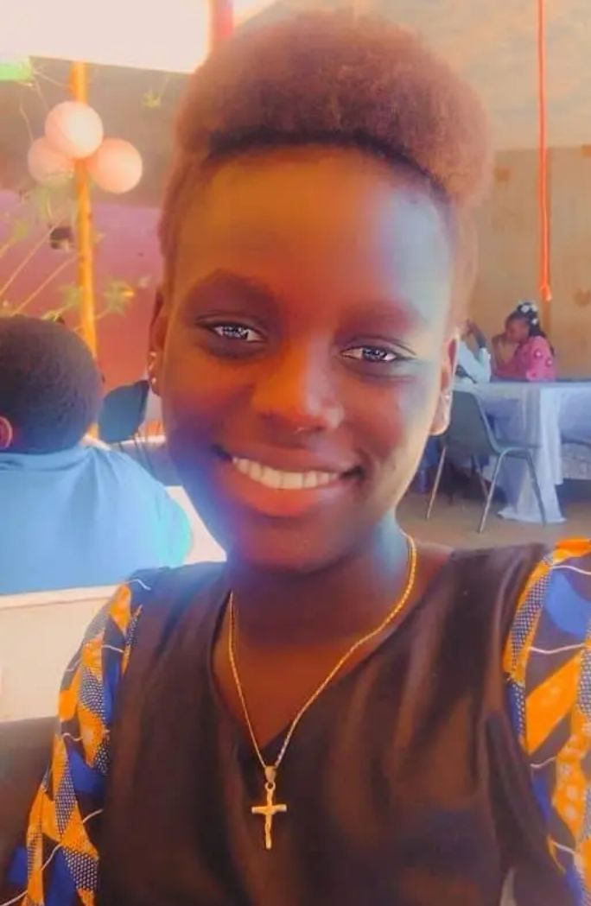
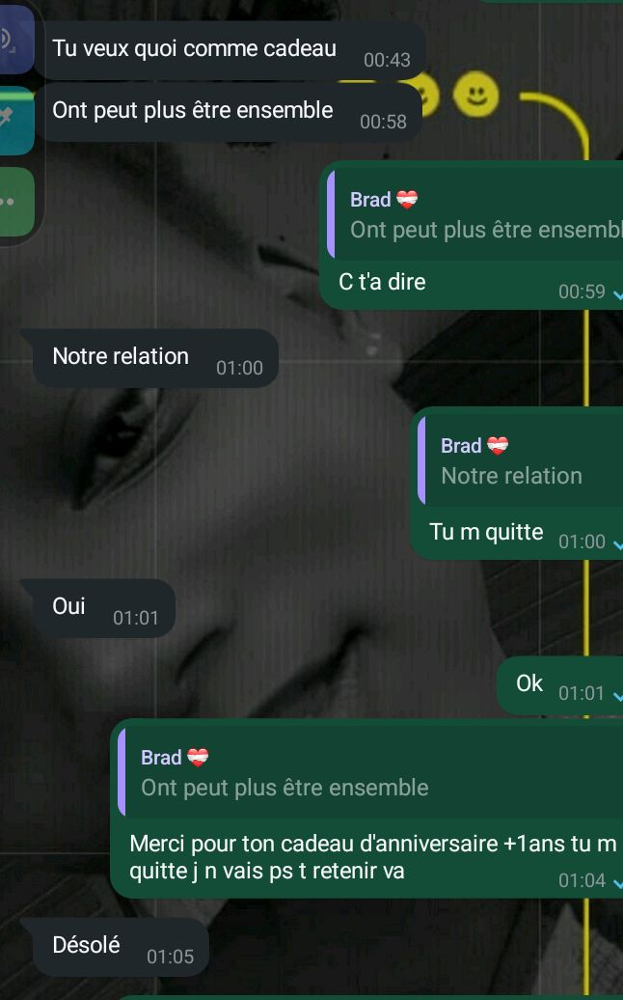
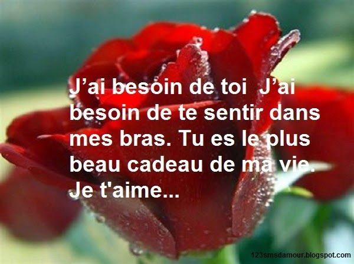

Les rencontres
Elle m'a envoyé une vidéo en parlant de ses sentiments envers moi. Je croyais qu'elle blaguait, alors je lui ai posé cette question : t'es sérieux là?. Elle m'a répondue "bien sûre"...bilahi, je ne pouvais plus me retenir, j'ai sauté partout!. Mais malgré ça, je doutais. Je n'avais plus confiance en elle à cause de ce qu'elle m'avait fait avant. Dans tout ça, il y avait son amie (or%)  qui jouait bien son rôle (elle etait tellement cool). Je lui ai proposé une rencontre, et elle a acepté.
Ce jour-là, j'étais si heureuse que j'amais, mais bon je s'avais q'uelle aurait honte de parler de ses sentiments. J'ai insisté doucement, et à la fin, elle m'a tout avouer . Je n'oublierais jamais ce jour-là. On était assis côte à côte, il faisiat calme...même semblait écouter. Elle m'a regardé droit dans les yeux, sans sourire, sans rire, et elle m'a dit: je taime...pas juste comme ça, mais vraiment. Bilahi, mon coeur a battu si fort que j'ai cru qu'il allait sortir de ma poitrine. j'étais figé. Je ne savait pas si je devait répondre, pleurer ou sourire. Je l'aimait depuis longtemps, mais je n'avait jamais pensé qu' un jour elle me le dirait en face. Aprés ça, le silence était doux. pas un silence gênant, mais un silence plein de vérité. je lui ai juste pris la main et je lui ai répondu doucement: moi aussi, et je veux te garder longtemps, bilahi. Ce moment-là...c'était simple, mais tellement fort. Un moment pur que même le temps ne peut pas effacer. Ensuite, les détails, tu connait! les bijoux, les calins... Je l'aimais vraiment, même sous la pluie je partais chez elle pour la voir, et même quand j'étais sur le point de dormir,elle m'appellait juste pour dire: viens chez moi, bilahi.
C'était le 29 décembre à Nguene . Ce jour-là, c'etait le jour des blagues, mais aussi un jour
inoubliable pour moi...

J'avais tellement la rage envers elle mais bon je le respecté. Si elle se tenait devant moi en disant
ces sotiges bilahi j'allais faire quelque chose que j'allais le regretter. Mais c'était une blague comme je
le disais tantôt.

Aimer quelqu'un, c'est offrir et recevoir sans attendre de retour immédiat.il n'y a pas de plus grand
besoin que celui de sentir l'autre à ses côtés, particuliérement dans les moments où la vie semble plus difficile.
parfois, tout ce que l'on désire, c'est simplement la chaleur d'un autre être humain pour alléger le poids de nos
pensées et de nos inquiétitudes. Avoir la personne que l'on aime dans ses bras, c'est trouver refuge, c'est se
sentir protégé et aimé, peut importe les circonstances. Ces moments de connexion intime, où
l'on se laisse aller àla vulnérabilité, créent une relation plus forte et plus authentique. L'amour devient
alors ce lien invisible qui nous unit, et chaque étreintre devient une promesse d'être là l'un pour l'autre, dans
les bons comme dans les mauvaises moments.
